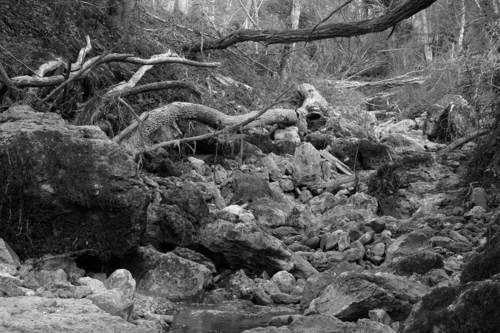
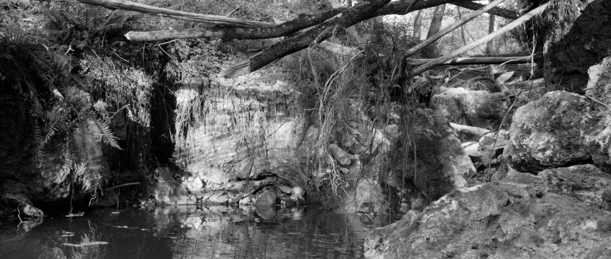
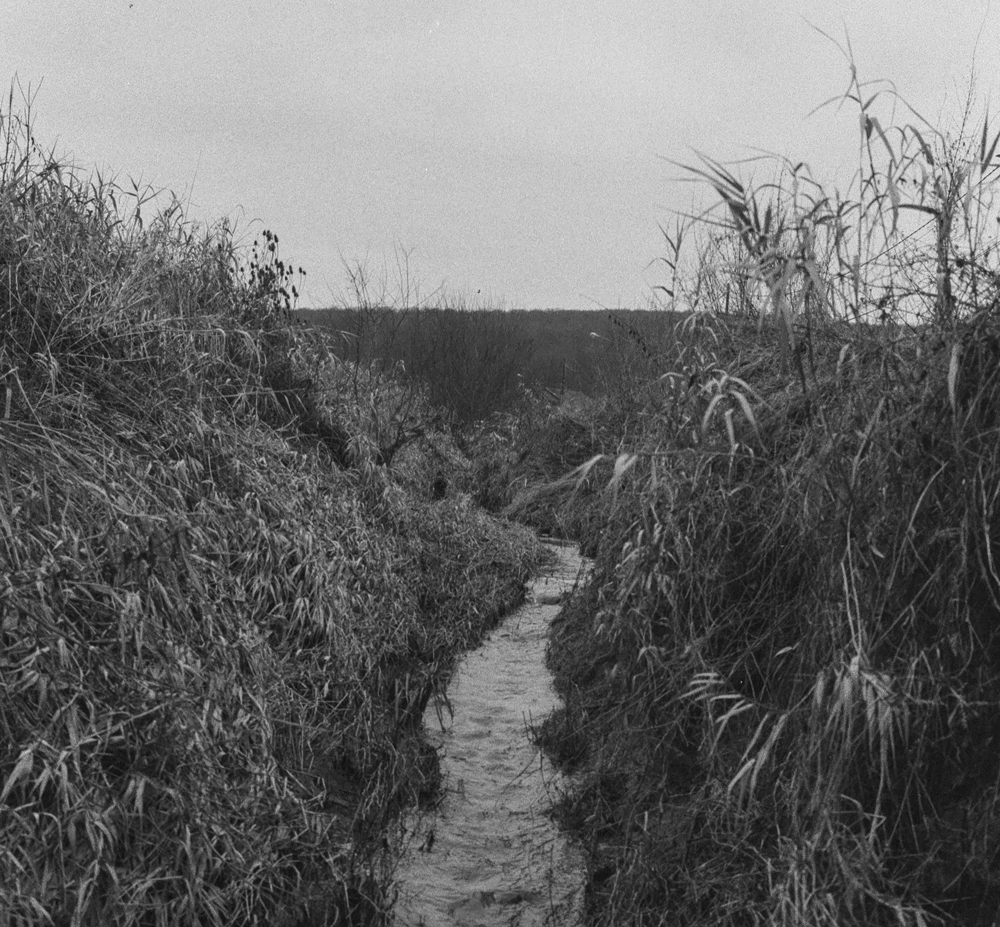
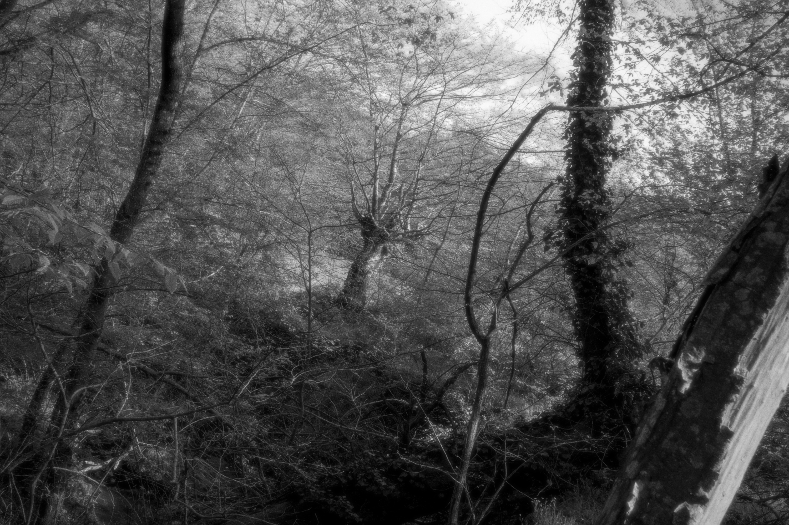
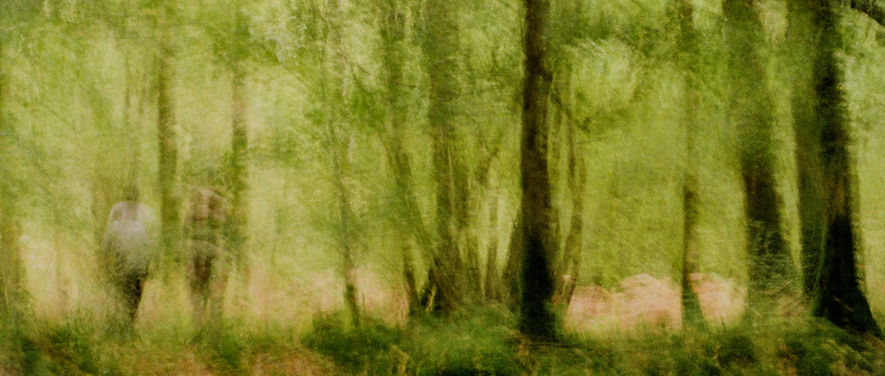

Projet de compositions forestières réalisé dans le hameau et les bois de Vanry entre 2023 et 2025. Vanry fut en ces temps et bien avant, le refuge d’une idée du socialisme réalisé, un ailleurs familier et un point de ralliement amical très fréquent à la croisée des chemins de la vallée.